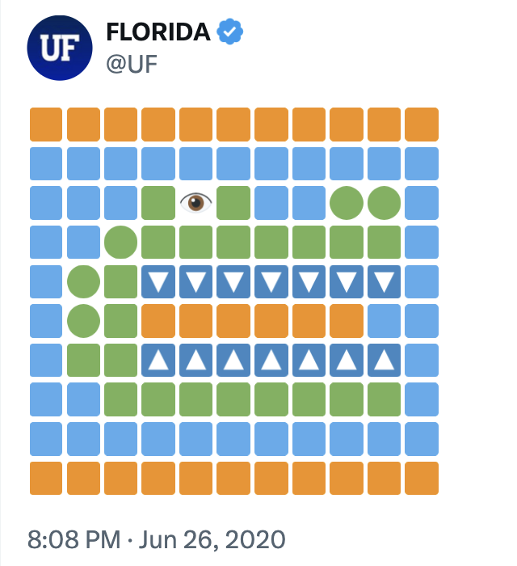
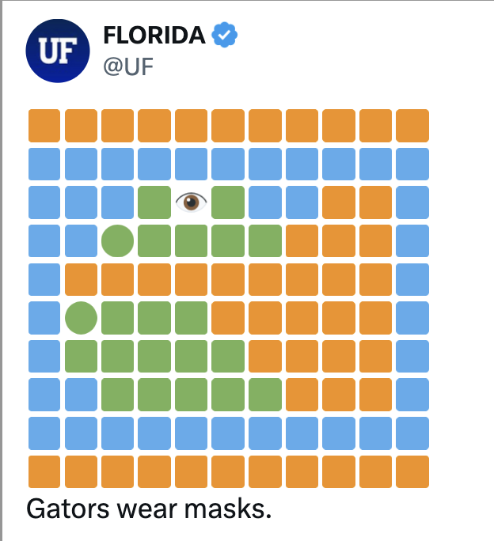
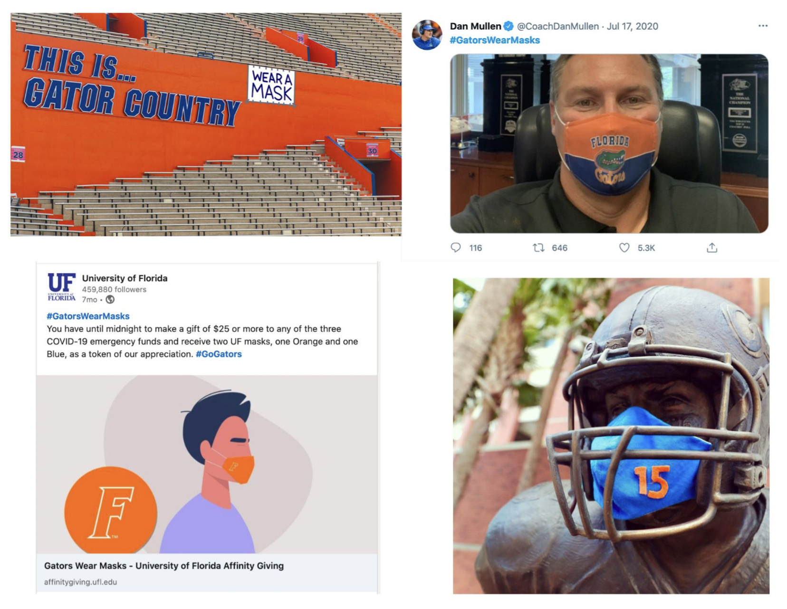
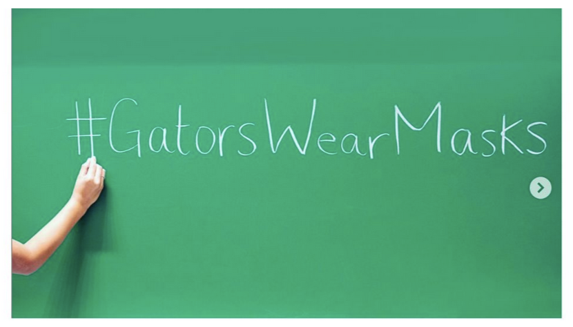
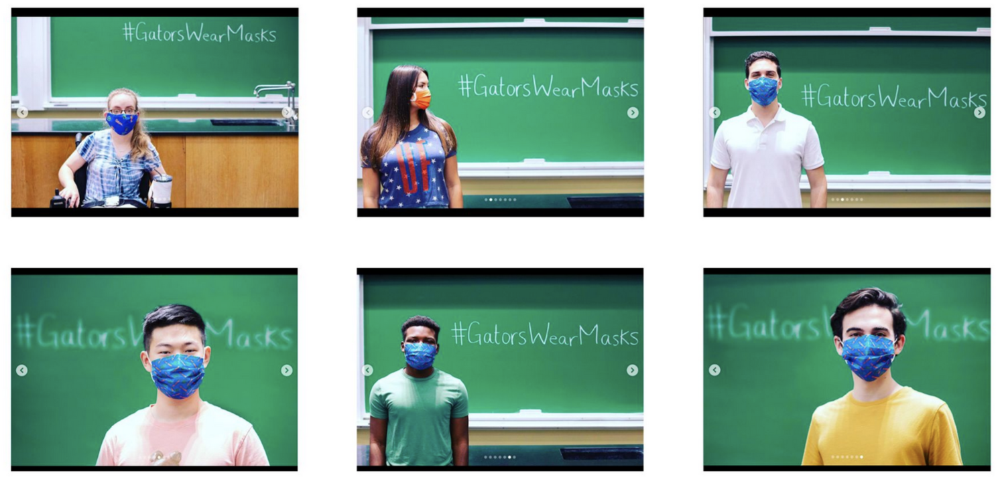
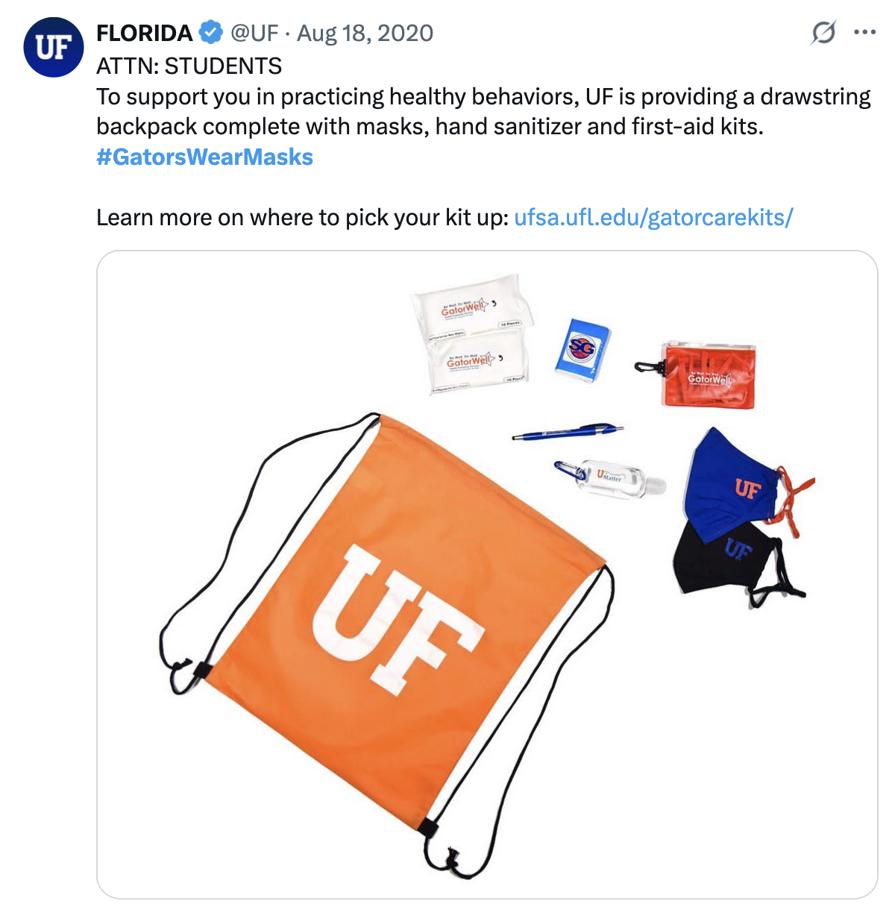

#GatorsWearMasks
A public health campaign that didn't ask people to wear masks — it declared that Gators already do. The result: 81 million impressions, 130 million GIF views, and a CDC study ranking UF #1 among six universities for indoor mask compliance at 98%.
The strategy
This campaign wasn't designed to convince anyone. It wasn't a policy reminder or a plea. It was a reframe: wearing a mask isn't something Gators are being asked to do — it's something Gators do. Much like "Go Gators" or the Gator Chomp, the goal was to make masking part of campus culture, owned by the community from day one.
The launch — by design
The campaign launched with a deliberate piece of misdirection. Late on a Friday night, the @UF Twitter account posted an emoji art Gator head logo — no explanation, no context. It generated 84,000 impressions overnight just from curiosity. Then on Saturday morning, @UF quote-tweeted it with a new version: the same emoji art, now wearing a mask. Three words underneath: "Gators wear masks."
No hashtag was included by design. For the campaign to feel organic, the community had to build it themselves.


How it unfolded



Real-world impact
UF Advancement created a giving opportunity tied to the hashtag that generated 6,710 supporters — donors who gave $25 or more received UF-branded masks as a thank-you. The campaign extended from social feeds into fundraising, community health, and institutional identity.

The win
The success of #GatorsWearMasks was only possible because the community owned it. The hashtag came from the Department of Urology. The coach posted without being asked. Students wrote the hashtag on a chalkboard themselves. A campaign built on trust in the community produced proof that social media, done right, can change behavior at scale.